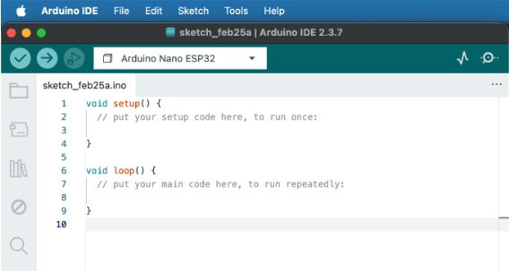
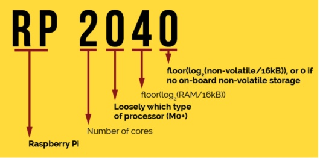
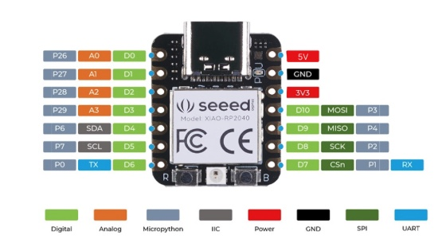
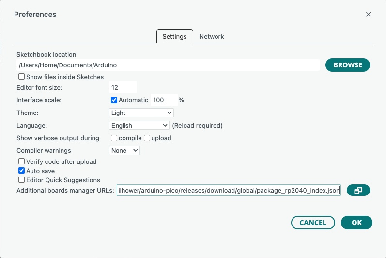
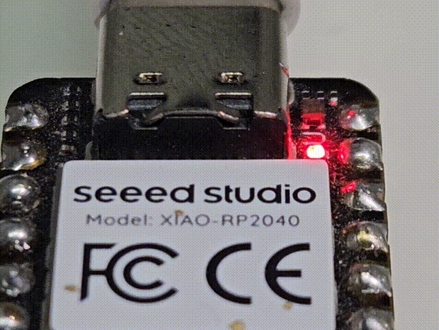
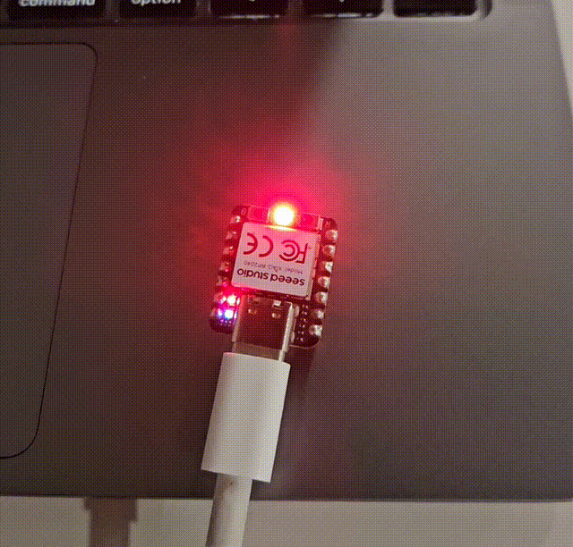
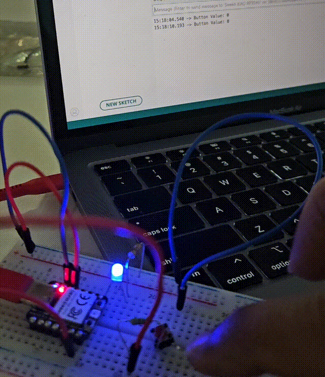

This week focused on understanding and programming microcontrollers. I explored different architectures, toolchains, and development environments, and wrote programs to interact with hardware peripherals such as LEDs, buttons, and sensors.
Embedded System
An embedded system is a specialized computer system — a combination of a computer processor, computer memory, and input/output peripheral devices — that has a dedicated function within a larger mechanical or electronic system.
How is it different from Computers?
Computers are general-purpose devices designed to multitask as well as to do high performance tasks and feature different forms of user interaction and versatile operating systems. Embedded systems are specialized computing units embedded within larger machines to perform dedicated tasks with limited resources, real-time constraints, and little to no user interface.
These systems need to be told what they should be doing and this is done using embedded programming.
Like all programming, you need a developer environment for embedded systems. We will be using Arduino IDE.

Code Structure in Arduino IDE
Each program in Arduino IDE is called a sketch. Typically a sketch will have the following elements:
- Declarations: To include specific header files or libraries or to declare constants, variables etc.
- void setup(): Runs only once when the embedded system/board powers up or is reset and is used to set pin modes, or to initialize the serial communication.
- void loop(): This function contains the main logic and will keep repeating in loop until the system/board is powered off.

Microcontroller XIAO RP2040
A microcontroller unit (MCU) is essentially a small computer on a single chip. It is designed to manage specific tasks within an embedded system without requiring a complex operating system. It is an integrated circuit, commonly with the following features:
- Central processing unit — ranging from small and simple 4-bit processors to complex 32-bit or 64-bit processors.
- Volatile memory (RAM) for data storage.
- ROM, EPROM, EEPROM or Flash memory for program and operating parameter storage.

XIAO RP2040 Pin Layout
Seeed Studio makes the board XIAO RP2040 using the Raspberry Pi 2040 chip, and they are popular for their ultra-small "thumb-sized" footprint making them ideal for space-constrained IoT projects. The compromise is that this board has fewer GPIO (General Purpose Input Output) pins compared to the standard Raspberry Pi Pico board.

Setting up in Arduino IDE
Detailed instructions are given at wiki.seeedstudio.com
- Add Board Manager URL in Preferences.
- Navigate to Tools > Board > Boards Manager. Search for rp2040. Two results appear — select Raspberry Pi Pico/RP2040/RP2350 (the standalone package, not the deprecated one) and install the latest version.
- Once installation is complete, go to Tools > Board > Select Other Board and Port. Search and select Seeed XIAO RP2040 from the list. Select the correct port.

First Program & Output
The Seeed Studio XIAO RP2040 features a standard single-color LED and an addressable RGB NeoPixel. We will blink the former first.
- Connect the board to Mac with a type C cable.
- In Arduino IDE, select example code to blink built in LED.
- The code will need to be modified with the correct pin number by looking up the data sheet.
Single-Color LED (Red/Blue/Green)
Pin: The Red user LED is connected to Pin 11, Green to Pin 12, and Blue to Pin 13.
Because they are active-low, setting the pin toHIGHturns the LED off, while setting it toLOWturns it on.

Addressable RGB LED (NeoPixel)
The board includes an addressable RGB LED on Pin 11. To control the color and brightness, we need a NeoPixel library.
I installed the Adafruit NeoPixel library from the Arduino Library Manager. I had to downgrade the version for this to work. Add delays between highs and lows.

LED, Push Button and Breadboard
I assembled the components in a breadboard and wrote a program to control the external LED on pin D7 and the built-in LED using a push button on D6. By default the external LED stays on. When the button is pressed (reads LOW), the external LED turns off, a message is printed to the serial monitor, and the system pauses for 4 seconds before resuming.
Pullup vs Pulldown
A pull-up resistor connects the input pin to VCC — the pin reads HIGH by default, and pressing the button pulls it LOW. A pull-down resistor connects to GND — the pin reads LOW by default, going HIGH when pressed. Most MCUs including the RP2040 have built-in pull-ups, so no external resistor is needed.
Delay vs millis
delay() pauses the entire program for the specified milliseconds — nothing else runs during this time, including reading buttons or sensors. millis() returns the time elapsed since the board powered on, letting you time events non-blocking so other code continues to run in parallel. Prefer millis() for responsive programs.
Continuous Input vs State Change Detection
Continuous input checks the button state every loop iteration — if held down, it triggers repeatedly. State change detection tracks the previous state and only fires when the button transitions (HIGH → LOW or LOW → HIGH), so an action triggers exactly once per press regardless of how long the button is held.
Serial Print
Serial.print() sends data from the MCU to the computer over USB. It is essential for debugging — you can output variable values, pin states, or messages to the Arduino IDE Serial Monitor to understand what your program is doing in real time, without needing a screen or display attached to the board.